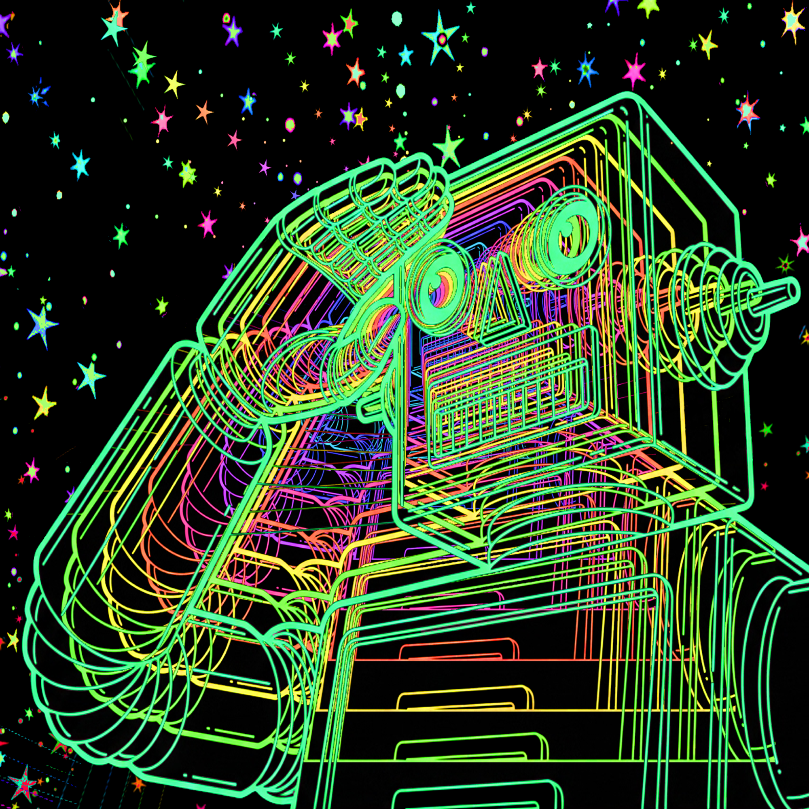

THERE'S A STAR-BOT WAITING IN THE SKY
COLLECTION: NEON
This is Broboticus rendered as pure signal — no fills, no solids, just the wireframe skeleton of the character viewed from below in extreme close-up, every panel and joint and eye socket mapped in layered neon lines that graduate from cool green at the outer edges through yellow, orange, and hot pink toward the center. The black void behind him is punctuated by multicolor stars in every direction. It's simultaneously the most technically precise and the most cosmic piece in the Broboticus archive — a character who is usually seen doing things (cooking, fishing, dancing) here reduced to the geometric fact of his own existence, floating in space, transmitting on all frequencies. The Bowie reference in the title is not a casual one. This is the Starman. He's been up there this whole time.